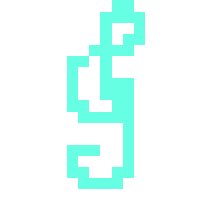

| Entities | Items | Recipes | Magics |
|---|
Windstorm Musician's Mark
|
|
Windstorm Musician's Markcol7f7f7fUnderia |
WINDSTORM MUSICIAN'S MARK is a armory accessory with id #729. Its rarity value is 4(Very Rare).It can be directly crafted.
As Results From:
Windstorm Musician's Mark 风暴音乐家印记*1 |
 Storm Core 风暴核心*4 |
 Note 笔记*1 |